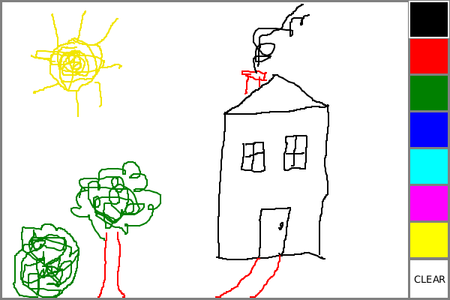
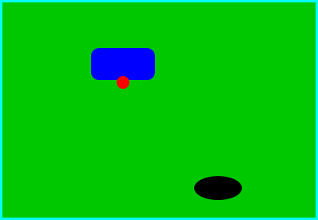

Section 6.3
Basic Events
Events are central to programming for a graphical user interface. A GUI program doesn't have a main() routine that outlines what will happen when the program is run, in a step-by-step process from beginning to end. Instead, the program must be prepared to respond to various kinds of events that can happen at unpredictable times and in an order that the program doesn't control. The most basic kinds of events are generated by the mouse and keyboard. The user can press any key on the keyboard, move the mouse, or press a button on the mouse. The user can do any of these things at any time, and the computer has to respond appropriately.
In Java, events are represented by objects. When an event occurs, the system collects all the information relevant to the event and constructs an object to contain that information. Different types of events are represented by objects belonging to different classes. For example, when the user presses one of the buttons on a mouse, an object belonging to a class called MouseEvent is constructed. The object contains information such as the target of the event (that is, the component on which the user clicked), the (x,y) coordinates of the point in the component where the click occurred, which modifier keys (such as the shift key) are being held down, and which button on the mouse was pressed. When the user presses a key on the keyboard, on the other hand, it is a KeyEvent object that is created, containing information relevant to an event generated by using the keyboard. After the event object is constructed, it can be passed as a parameter to a designated method. That method is called an event handler for the event. In JavaFX, event handlers are often written as lambda expressions. By writing an event handler, the programmer says what should happen when the event occurs.
As a Java programmer, you get a fairly high-level view of events. There is a lot of processing that goes on between the time that the user presses a key or moves the mouse and the time that a method in your program is called to respond to the event. Fortunately, you don't need to know much about that processing. But you should understand this much: Even though you didn't write it, there is a routine running somewhere that executes a loop of the form
while the program is still running:
Wait for the next event to occur
Handle the event
This loop is called an event loop. Every GUI program has an event loop. In Java, you don't have to write the loop. It's part of "the system." If you write a GUI program in some other language, you might have to provide a main routine that runs the event loop.
In this section, we'll look at handling mouse and key events in Java, and we'll cover the framework for handling events in general. We will also see how to make an animation.
6.3.1 Event Handling
For an event to have any effect, a program must detect the event and react to it. In order to detect an event, the program must "listen" for it. Listening for events is something that is done by an event listener, which contains an event handler method that can respond to the event. An event listener is defined by an interface that specifies the event handling methods that it contains. Listeners for different kinds of events are defined by different interfaces. In most cases, the interface is a functional interface, defining a single event handler method; in that case, the listener can be given by a lambda expression.
For many kinds of events in JavaFX, listeners are defined by a functional interface named EventHandler, which defines the method handle(event). The parameter to this method, event, is the event object that contains information about the event. When you provide a definition for handle(), you write the code that will be executed to handle the event.
(EventHandler is actually a parameterized type, something that we have not encountered before and will not encounter officially until Section 7.3. Basically, all this really means is that EventHandler really defines many different types, with names like EventHandler<MouseEvent>, EventHandler<KeyEvent>, and EventHandler<ActionEvent>. The type EventHandler<MouseEvent> defines a handle(event) method in which the event is of type MouseEvent, the type EventHandler<KeyEvent> defines a handle(event) method in which the event is of type KeyEvent, and so on. Fortunately, you don't need to understand parameterized types in this chapter; you only need to know that the event object that you use when handling an event will have the appropriate type for that event. For example, when handling a mouse event, the event object is of type MouseEvent.)
Many events in JavaFX are associated with GUI components. For example, when the user presses a button on the mouse, the associated component is the one that contains the mouse cursor when the button is pressed. This object is called the target of the event. In order to respond to the event, you need to register a listener either with the target of the event or with some other object that knows about the event. For example, lets look again at this statement from HelloWorldFX.java, our first GUI program from Section 6.1:
helloButton.setOnAction( e -> message.setText("Hello World!") );
Here, helloButton is an object of type Button. When the user clicks on the button, an event of type ActionEvent is generated. The target of that event is helloButton. The method helloButton.setOnAction() registers an event listener that will receive notification of any ActionEvents from the button. The listener in this case is defined by a lambda expression. In the lambda expression, the parameter, e, is the ActionEvent object, and the code in the lambda expression is what happens in response to the event. Most event handling in this chapter will be set up in a similar way.
For key events and some mouse events, it's not just the event target that gets a chance to respond to the event. For example, suppose that you press a mouse button over a Canvas that is inside a BorderPane that is in turn inside a Scene. The target of the mouse event is the Canvas but the BorderPane and the Scene also have a chance to respond to the event. That is, you can register a mouse event listener on any or all of these objects to respond to the event. The object that the listener is registered with is called the source of the event. The event object parameter, evt, in an event handler method has both a source, given by evt.getSource(), and a target, given by evt.getTarget(); often they are the same, but they don't have to be. Note that the same event can be sent to several handlers. A handler can "consume" an event, by calling evt.consume(), to stop it from being sent to any additional handlers. For example, when you are typing in a text input box, the input box consumes the key events that you generate by typing, so that the scene doesn't get a chance to handle them.
(Actually, it's more complicated than that. For key events and some kinds of mouse events, the event first travels down through the scene and then through scene graph nodes that contain the event target; this is called the "event filtering" or "bubble down" phase of event processing. After reaching the target, the event travels back up through the scene graph and finally to the scene; this is the "event handling" or "bubble up" phase. The event can be consumed at any point along the way, and if that happens, the process stops. None of this is used in this chapter, but for more information, see the documentation for the addEventFilter() and addEventHandler() methods in the Scene and Node classes.)
Most of this section is concerned with mouse and key events. It is important to understand that many GUI programs do not need to deal with such events directly. Instead, you work with GUI components that are already programmed to handle mouse and key events on their own. For example, when the user clicks a Button, it is the button that listens for mouse events and responds to them. When the button detects that it has been clicked, it generates an ActionEvent. When you write an application that uses buttons, you program responses to ActionEvents, not to mouse events. Similarly, when the user types in a text input box, it is the input box that listens for key events and responds to them. Nevertheless, at base, it's mouse and keyboard events that drive the action in a program. It's useful to understand them—and you can do some interesting things by processing them directly.
6.3.2 Mouse Events
A mouse event is represented by an object of type MouseEvent. (In fact, mouse events can actually be generated by other input devices, such as a trackpad or touch screen; events from these devices are translated by the system into MouseEvents.) That class, and all of the classes related to mouse and key events, can be found in package javafx.scene.input. As the user manipulates the mouse, several kinds of event are generated. For example, clicking a mouse button generates three events, a "mouse pressed" event, a "mouse released" event, and a "mouse clicked" event. Simply moving the mouse generates a sequence of events as the mouse cursor moves from point to point on the screen. To respond to mouse events on a component, you can register listeners with that component. You can register a separate listener for each kind of mouse event on a component c using instance methods such as c.setOnMousePressed(handler) and c.setOnMouseMoved(handler). The parameter is a mouse event handler, generally given as a lambda expression. Suppose, for example, that canvas is a component of type canvas, and that you would like a method, redraw(), to be called when the user clicks the canvas. You can make that happen by saying
canvas.setOnMousePressed( evt -> redraw() );
Generally, you would put this statement in the start() method of an Application, while setting up the GUI for the program. Mouse clicks on the canvas could be also be handled by the scene or by any scene graph node that contains the canvas, directly or indirectly, but it is much more usual for the target of a mouse event to handle the event.
Mouse event types include: MouseEntered, generated when the mouse cursor moves from outside a component into the component; MouseExited, generated when the mouse cursor moves out of a component; MousePressed, generated when the user presses one of the buttons on the mouse; MouseReleased, generated when the user releases one of the buttons on the mouse; MouseClicked, generated after a mouse released event if the user pressed and released the mouse button on the same component; MouseDragged, generated when the user moves the mouse while holding down a mouse button; and MouseMoved, generated when the user moves the mouse without holding down a button.
The target of a MouseDragged, MouseReleased, or MouseClicked event is the same component where the mouse button was pressed, even if the mouse has moved outside of that component. The target of a MousePressed or MouseMoved event is the component that contains the mouse cursor when the event occurs. And for MouseEntered and MouseExited, the target is the component that is being entered or exited.
Often, when a mouse event occurs, you want to know the location of the mouse cursor. This information is available from the MouseEvent parameter in the event-handling method, which contains instance methods that return information about the event. If evt is the parameter, then you can find out the coordinates of the mouse cursor by calling evt.getX() and evt.getY(). These methods return values of type double that give the x and y coordinates where the mouse cursor was positioned at the time when the event occurred. The coordinates are expressed in the coordinate system of the source of the event, where the top left corner of the component is (0,0). (The source is the component on which the event listener is registered; this is not necessarily the same as the event target, but it usually is.)
The user can hold down certain modifier keys while using the mouse. The possible modifier keys include: the Shift key, the Control key, the Alt key (called the Option key on the Mac), and the Meta key (called the Command or Apple key on the Mac). Not every computer has a Meta key. You might want to respond to a mouse event differently when the user is holding down a modifier key. The boolean-valued instance methods evt.isShiftDown(), evt.isControlDown(), evt.isAltDown(), and evt.isMetaDown() can be called to test whether the modifier keys are pressed.
You might also want to have different responses depending on whether the user presses the left mouse button, the middle mouse button, or the right mouse button. For events triggered by a mouse button, you can determine which button was pressed or released by calling evt.getButton(), which returns one of the enumerated type constants MouseButton.PRIMARY, MouseButton.MIDDLE, or MouseButton.SECONDARY. Generally, the left mouse button is the primary button and the right mouse button is secondary. For events such as mouseEntered and mouseExited that are not triggered by buttons, evt.getButton() returns MouseButton.NONE.
The user can hold down several mouse buttons at the same time. If you want to know which mouse buttons are actually down at the time of an event, you can use the boolean-valued functions evt.isPrimaryButtonDown(), evt.isMiddleButtonDown(), and evt.isSecondaryButtonDown().
As a simple example, suppose that when the user clicks a Canvas, canvas, you would like to draw a red rectangle at the point where the user clicked. But if the shift key is down, you want to draw a blue oval instead. An event handler to do that can be defined as:
canvas.setOnMousePressed( evt -> {
GraphicsContext g = canvas.getGraphicsContext2D();
if ( evt.isShiftDown() ) {
g.setFill( Color.BLUE );
g.fillOval( evt.getX() - 30, evt.getY() - 15, 60, 30 )
}
else {
g.setFill( Color.RED );
g.fillRect( evt.getX() - 30, evt.getY() - 15, 60, 30 );
}
} );
To get a better idea of how mouse events work, you should try the sample program SimpleTrackMouse.java. This program responds to any of the seven different kinds of mouse events by displaying the coordinates of the mouse, the type of event, and a list of the modifier keys and buttons that are down. You can experiment with the program to see what happens as you do various things with the mouse. I also encourage you to read the source code.
6.3.3 Dragging
A drag gesture occurs when the user moves the mouse while holding down one of the buttons on the mouse. It is interesting to look at what a program needs to do in order to respond to dragging operations. The drag gesture starts when the user presses a mouse button, it continues while the mouse is dragged, and it ends when the user releases the button. This means that the programming for the response to one dragging gesture must be spread out over the three event handlers, one for MousePressed, one for MouseDragged, and one for MouseReleased! Furthermore, the MouseDragged handler can be called many times as the mouse moves. To keep track of what is going on between one method call and the next, you need to set up some instance variables. In many applications, for example, in order to process a MouseDragged event, you need to remember the previous coordinates of the mouse. You can store this information in two instance variables prevX and prevY of type double. It can also be useful to save the starting coordinates, where the original MousePressed event occurred, in instance variables. And I suggest having a boolean variable, dragging, which is set to true while a dragging gesture is being processed. This is necessary because in many applications, not every MousePressed event starts a dragging operation to which you want to respond. Also, if the user presses a second mouse button without releasing the first, there will be two MousePressed events before the MouseReleased event; usually, you don't want the second MousePressed to start a new drag operation. The event-handling methods can use the value of dragging to check whether a drag operation is actually in progress. Often, I will write instance methods to handle the events, which in outline look something like this:
private double startX, startY; // Point where original mouse press occurred.
private double prevX, prevY; // Most recently processed mouse coords.
private boolean dragging; // Set to true when dragging is in progress.
. . . // other instance variables for use in dragging
public void mousePressed(MouseEvent evt) {
if (dragging) {
// The user pressed a second mouse button before releasing the first.
// Ignore the second button press.
return;
}
if ( we-want-to-start-dragging ) {
dragging = true;
startX = evt.getX(); // Remember starting position.
startY = evt.getY();
prevX = startX; // Remember most recent coords.
prevY = startY;
.
. // Other processing.
.
}
}
public void mouseDragged(MouseEvent evt) {
if ( dragging == false ) // First, check if we are
return; // processing a dragging gesture.
int x = evt.getX(); // Current position of Mouse.
int y = evt.getY();
.
. // Process a mouse movement from (prevX, prevY) to (x,y).
.
prevX = x; // Remember the current position for the next call.
prevY = y;
}
public void mouseReleased(MouseEvent evt) {
if ( dragging == false ) // First, check if we are
return; // processing a dragging gesture.
dragging = false; // We are done dragging.
.
. // Other processing and clean-up.
.
}
I will then install event handlers on the relevant component that simply call these methods:
c.setOnMousePressed( e -> mousePressed(e) ); c.setOnMouseDragged( e -> mouseDragged(e) ); c.setOnMouseReleased( e -> mouseReleased(e) );
Note that the event handlers in these statements simply call another method in the same class, and that method has the same parameter as the event handler. That means that it's possible to write the lambda expressions as method references (Subsection 4.5.4). The methods that are called are instance methods in the object "this", so the method references would have names like this::mousePressed, and the event handlers could be installed using
c.setOnMousePressed( this::mousePressed ); c.setOnMouseDragged( this::mouseDragged ); c.setOnMouseReleased( this::mouseReleased );
As an example, let's look at a typical use of dragging: allowing the user to sketch a curve by dragging the mouse. This example also shows many other features of graphics and mouse processing. In the program, you can draw a curve by dragging the mouse on a large white drawing area, and you can select a color for drawing by clicking on one of several colored rectangles to the right of the drawing area. The complete source code can be found in SimplePaint.java. Here is a picture of the program window after some drawing has been done:

I will discuss a few aspects of the source code here, but I encourage you to read it carefully in its entirety. There are lots of informative comments in the source code.
In this program, all drawing is done on a single canvas that fills the entire window. The program is designed to work for any reasonable canvas size, that is, unless the canvas is too small. This means that coordinates are computed in terms of the actual width and height of the canvas. (The width and height are obtained by calling canvas.getWidth() and canvas.getHeight().) This makes things quite a bit harder than they would be if we assumed some particular fixed size for the canvas. Let's look at some of these computations in detail. For example, the large white drawing area extends from y = 3 to y = height - 3 vertically and from x = 3 to x = width - 56 horizontally. These numbers are needed in order to interpret the meaning of a mouse click. They take into account a gray border around the canvas and the color palette along the right edge of the canvas. The gray border is 3 pixels wide. The colored rectangles are 50 pixels wide. Together with the 3-pixel border around the canvas and a 3-pixel divider between the drawing area and the colored rectangles, this adds up to put the right edge of the drawing area 56 pixels from the right edge of the canvas.
A white square labeled "CLEAR" occupies the region beneath the colored rectangles on the right edge of the canvas. Allowing for this region, we can figure out how much vertical space is available for the seven colored rectangles, and then divide that space by 7 to get the vertical space available for each rectangle. This quantity is represented by a variable, colorSpace. Out of this space, 3 pixels are used as spacing between the rectangles, so the height of each rectangle is colorSpacing - 3. The top of the N-th rectangle is located (N*colorSpacing + 3) pixels down from the top of the canvas, assuming that we count the rectangles starting with zero. This is because there are N rectangles above the N-th rectangle, each of which uses colorSpace pixels. The extra 3 is for the border at the top of the canvas. After all that, we can write down the command for drawing the N-th rectangle:
g.fillRect(width - 53, N*colorSpace + 3, 50, colorSpace - 3);
That was not easy! But it shows the kind of careful thinking and precision graphics that are sometimes necessary to get good results.
The mouse in this program is used to do three different things: Select a color, clear the drawing, and draw a curve. Only the third of these involves dragging, so not every mouse click will start a dragging operation. The mousePressed() method has to look at the (x,y) coordinates where the mouse was clicked and decide how to respond. If the user clicked on the CLEAR rectangle, the drawing area is cleared by calling a clearAndDrawPalette() method that redraws the entire canvas. If the user clicked somewhere in the strip of colored rectangles, the corresponding color is selected for drawing. This involves computing which color the user clicked on, which is done by dividing the y coordinate by colorSpacing. Finally, if the user clicked on the drawing area, a drag operation is initiated. In this case, a boolean variable, dragging, is set to true so that the mouseDragged and mouseReleased methods will know that a curve is being drawn. The code for this follows the general form given above. The actual drawing of the curve is done in the mouseDragged() method, which draws a line from the previous location of the mouse to its current location. Some effort is required to make sure that the line does not extend beyond the white drawing area of the canvas. This is not automatic, since as far as the computer is concerned, the border and the color bar are part of the canvas. If the user drags the mouse outside the white drawing area while drawing a curve, the mouseDragged() routine changes the x and y coordinates to make them lie within the drawing area.
6.3.4 Key Events
In Java, user actions become events in a program, with a GUI component as the target of the event. When the user presses a button on the mouse, the component that contains the mouse cursor is the target of the event. But what about keyboard events? When the user presses a key, what component is the target of the KeyEvent that is generated?
A GUI uses the idea of input focus to determine the target of keyboard events. At any given time, just one interface element on the screen can have the input focus, and that is where keyboard events are directed. If the interface element happens to be a JavaFX component, then the information about the keyboard event becomes an object of type KeyEvent, and it is delivered to any key event handlers that are listening for KeyEvents associated with that component. Note that because of the way key events are processed, the Scene object in the window that contains the focused component also gets a chance to handle a key event. If there is no other focused component in the window, then the scene itself will be the target for key events. In my sample programs, I will usually add key event handlers to the scene object.
A program generally gives some visual feedback to the user about which component has the input focus. For example, if the component is a text-input box, the feedback is usually in the form of a blinking text cursor. Another possible visual clue is to draw a brightly colored border around the edge of a component when it has the input focus. You might see that on a button that has focus. When a button has focus, pressing the space bar is equivalent to clicking the button.
If comp is any component, and you would like it to have the input focus, you can call comp.requestFocus(). In a typical user interface, the user can choose to give the focus to a component by clicking on that component with the mouse. And pressing the tab key will often move the focus from one component to another. This is handled automatically by the components involved, without any programming on your part. However, some components do not automatically request the input focus when the user clicks on them. That includes, for example, a Canvas. Such a component can still receive the input focus if its requestFocus() is called. However, you can't automatically move the focus to that component with the tab key. To enable that, you can call comp.setFocusTraversable(true). And you can test whether a component is focused by calling comp.isFocused().
The focused component is contained in—or sometimes is itself—a window. That window is said to be the "focused" or "active" window. It is usually the front window on the screen. In JavaFX a Stage object is a window. You can call stage.requestFocus() to request that the window be moved to the front of the screen and become the active window. And you can call stage.isFocused() to test whether the window is active.
Java makes a careful distinction between the keys that you press and the characters that you type. There are lots of keys on a keyboard: letter keys, number keys, modifier keys such as Control and Shift, arrow keys, page up and page down keys, keypad keys, function keys, and so on. In some cases, such as the shift key, pressing a key does not type a character. On the other hand, typing a character sometimes involves pressing several keys. For example, to type an uppercase "A", you have to press the Shift key and then press the A key before releasing the Shift key. On my Mac OS computer, I can type an accented e, by holding down the Option key, pressing the E key, releasing the Option key, and pressing E again. Only one character was typed, but I had to perform three key-presses and I had to release a key at the right time.
In JavaFX, there are three types of key event: KeyPressed, which is generated when the user depresses any key on the keyboard; KeyReleased, which is generated when the user releases a key that had been pressed; and KeyTyped, which is generated when the user types a character, possibly using a series of key presses and key releases. Note that one user action, such as pressing the E key, can be responsible for two events, a keyPressed event and a keyTyped event. Typing an upper case "A" can generate two keyPressed events, two keyReleased events, and one keyTyped event.
Usually, it is better to think in terms of two separate streams of events, one consisting of keyPressed and keyReleased events and the other consisting of keyTyped events. For some applications, you want to monitor the first stream; for other applications, you want to monitor the second one. Of course, the information in the keyTyped stream could be extracted from the keyPressed/keyReleased stream, but it would be difficult (and also system-dependent to some extent). Some user actions, such as pressing the Shift key, can only be detected as keyPressed events. I used to have a computer solitaire game that highlighted every card that could be moved, when I held down the Shift key. You can do something like that in Java by highlighting the cards when the Shift key is pressed and removing the highlight when the Shift key is released.
There is one more complication. When you hold down a key on the keyboard, that key might auto-repeat. This means that it will generate multiple KeyPressed events with just one KeyReleased at the end of the sequence. It can also generate multiple KeyTyped events. For the most part, this will not affect your programming, but you should not expect every KeyPressed event to have a corresponding KeyReleased event.
Each key on the keyboard has a code that identifies it. In JavaFX, key codes are represented by enumerated type constants from the enum KeyCode. When an event handler for a KeyPressed or KeyReleased event is called, the parameter, evt, contains the code of the key that was pressed or released. The code can be obtained by calling the function evt.getCode(). For example, when the user presses the shift key, this function will return the value KeyCode.SHIFT. You can find all the codes in the documentation for KeyCode, but names for most keys are easy to guess. Letter keys have names like KeyCode.A and KeyCode.Q. The arrow keys are named KeyCode.LEFT, KeyCode.RIGHT, KeyCode.UP, and KeyCode.DOWN. The space bar is KeyCode.SPACE. And function keys have names like KeyCode.F7.
In the case of a KeyTyped event, you want to know which character was typed. This information can be obtained by calling the function evt.getCharacter(). This function returns a value of type String that contains the character that was typed.
As a first example, you can check out the sample program KeyboardEventDemo.java. This program draws a small square on a canvas. The user can move the square left, right, up, and down by pressing arrow keys. This is implemented in a method
private void keyPressed( KeyEvent evt )
that is called by an event handler for KeyPressed events. The handler is installed on the Scene object in the start() method with the statement
scene.setOnKeyPressed( e -> keyPressed(e) );
In the keyPressed() method, the value of evt.getCode() is checked. If it's one of the arrow keys that was pressed, the canvas is redrawn to show the square in a different position.
The program also installs handlers for KeyReleased and KeyTyped events in a similar way. To give the KeyTyped handler something to do, it changes the color of the square when the user types "r", "g", "b", or "k". I encourage you to run the program and to read the entire source code.
6.3.5 AnimationTimer
There is another kind of basic event that I would like to introduce before turning to a more interesting example; that is, events that are used to drive an animation. The events in this case happen in the background, and you don't have to register a listener to respond to them. However, you do need to write a method that will be called by the system when the events occur.
A computer animation is just a sequence of still images, presented to the user one after the other. If the time between images is short, and if the change from one image to another is not too great, then the user perceives continuous motion. In JavaFX, you can program an animation using an object of type AnimationTimer from package javafx.animation. An AnimationTimer, animator, has a method animator.start() that you can call to start the animation running or to restart it if it has been paused. It has the method animator.stop() to pause the animation. It also has a method handle(time), but handle() is not a method that you call; it's one that you need to write to say what happens in the animation. The system will call your handle() method once for each frame of the animation. Its job is to do whatever is necessary to implement each frame.
The handle() method will be called on the JavaFX application thread, which means that you can do things like draw on a canvas or manipulate a GUI component. However, whatever you do should not take very long, since JavaFX animations are meant to run at 60 frames per second, which means handle() will ideally be called every 1/60 second.
AnimationTimer itself is an abstract class, and handle() is an abstract method. This means that to make an animation, you need to write a subclass of AnimationTimer and provide a definition for the handle() method. Suppose, for example, that you simply want to call a draw() method for each frame. This could be done as follows, using an anonymous subclass of AnimationTimer (see Subsection 5.8.3):
AnimationTimer animator = new AnimationTimer() {
public void handle( long time ) {
draw();
}
};
Then, to get the animation started, you would need to call animator.start(). This could all be done in an application's start() method.
The parameter, time, gives the current time, measured as the number of nanoseconds since some arbitrary time in the past (the same arbitrary time that is used by System.nanoTime()). You might use time in the calculations that you do for the frame, as a way of making each frame different from the next.
6.3.6 State Machines
We are ready to look at an a program that uses animation and key events to implement a simple game. The program uses an AnimationTimer to drive the animation, and it uses a number of instance variables to keep track of the current state of the game. The idea of "state" is an important one.
The information stored in an object's instance variables is said to represent the state of that object. When one of the object's methods is called, the action taken by the object can depend on its state. (Or, in the terminology we have been using, the definition of the method can look at the instance variables to decide what to do.) Furthermore, the state can change. (That is, the definition of the method can assign new values to the instance variables.) In computer science, there is the idea of a state machine, which is just something that has a state and can change state in response to events or inputs. The response of a state machine to an event depends on what state it's in when the event occurs. An object is a kind of state machine. Sometimes, this point of view can be very useful in designing classes.
The state machine point of view can be especially useful in the type of event-oriented programming that is required by graphical user interfaces. When designing a GUI program, you can ask yourself: What information about state do I need to keep track of? What events can change the state of the program? How will my response to a given event depend on the current state? Should the appearance of the GUI be changed to reflect a change in state? How should the the state be taken into account when drawing the content of a canvas? All this is an alternative to the top-down, step-wise-refinement style of program design, which does not apply to the overall design of an event-oriented program.
In the KeyboardEventDemo program, discussed above, the state of the program is recorded in instance variables such as squareColor, squareLeft, and squareTop, which record the color and position of the colored square. These state variables are used in a draw() method that draws the square on a canvas. Their values are changed in the key-event-handling methods.
In the rest of this section, we'll look at another example, where the state plays an even bigger role. In this example, the user plays a simple arcade-style game by pressing the arrow keys. The program is defined in the source code file SubKiller.java. As usual, it would be a good idea to compile and run the program as well as read the full source code. Here is a picture:

The entire application window is filled by a canvas. The program shows a black "submarine" near the bottom of the canvas. The submarine moves erratically back and forth near the bottom of the window. Near the top, there is a blue "boat." You can move this boat back and forth by pressing the left and right arrow keys. Attached to the boat is a red "bomb" (or "depth charge"). You can drop the bomb by hitting the down arrow key. The objective is to blow up the submarine by hitting it with the bomb. If the bomb falls off the bottom of the screen, you get a new one. If the submarine explodes, a new sub is created and you get a new bomb. Try it! Make sure to hit the sub at least once, so you can see the explosion.
Let's think about how this game can be programmed. First of all, since we are doing object-oriented programming, I decided to represent the boat, the depth charge, and the submarine as objects. Each of these objects is defined by a separate nested class inside the main application class, and each object has its own state which is represented by the instance variables in the corresponding class. I use variables boat, bomb, and sub to refer to the boat, bomb, and submarine objects.
Now, what constitutes the "state" of the program? That is, what things change from time to time and affect the appearance or behavior of the program? Of course, the state includes the positions of the boat, submarine, and bomb, so those objects have instance variables to store the positions. Anything else, possibly less obvious? Well, sometimes the bomb is falling, and sometimes it's not. That is a difference in state. Since there are two possibilities, I represent this aspect of the state with a boolean variable in the bomb object, bomb.isFalling. Sometimes the submarine is moving left and sometimes it is moving right. The difference is represented by another boolean variable, sub.isMovingLeft. Sometimes, the sub is exploding. This is also part of the state, and it is represented by a boolean variable, sub.isExploding. However, the explosions require a little more thought. An explosion is something that takes place over a series of frames. While an explosion is in progress, the sub looks different in each frame, as the size of the explosion increases. Also, I need to know when the explosion is over so that I can go back to moving and drawing the sub as usual. So, I use an integer variable, sub.explosionFrameNumber to record how many frames have been drawn since the explosion started; the value of this variable is used only when an explosion is in progress.
How and when do the values of these state variables change? Some of them seem to change on their own: For example, as the sub moves left and right, the state variables that specify its position change. Of course, these variables are changing because of an animation, and that animation is driven by an AnimationTimer. Each time the animator's handle() method is called, some of the state variables have to change to get ready to draw next frame of the animation. The changes are made in the handle() method before redrawing the canvas. The boat, bomb, and sub objects each contain an updateForNextFrame() method that updates the state variables of the object to get ready for the next frame of the animation. The handle() method calls these methods with the statements
boat.updateForNewFrame(); bomb.updateForNewFrame(); sub.updateForNewFrame();
There are several state variables that change in these update methods, in addition to the position of the sub: If the bomb is falling, then its y-coordinate increases from one frame to the next. If the bomb hits the sub, then the isExploding variable of the sub changes to true, and the isFalling variable of the bomb becomes false. The isFalling variable also becomes false when the bomb falls off the bottom of the screen. If the sub is exploding, then its explosionFrameNumber increases by one in each frame, and if it has reached a certain value, the explosion ends and isExploding is reset to false. At random times, the sub switches between moving to the left and moving to the right. Its direction of motion is recorded in the sub's isMovingLeft variable. The sub's updateForNewFrame() method includes the following lines to change the value of isMovingLeft at random times:
if ( Math.random() < 0.02 ) {
isMovingLeft = ! isMovingLeft;
}
There is a 1 in 50 chance that Math.random() will be less than 0.02, so the statement "isMovingLeft = ! isMovingLeft" is executed in one out of every fifty frames, on average. The effect of this statement is to reverse the value of isMovingLeft, from false to true or from true to false. That is, the direction of motion of the sub is reversed.
In addition to changes in state that take place from one frame to the next, a few state variables change when the user presses certain keys. In the program, this is checked in a handler for KeyPressed events. If the user presses the left or right arrow key, the position of the boat is changed. If the user presses the down arrow key, the bomb changes from not-falling to falling. The handler is a long lambda expression that is registered with the scene in the application's start() method:
scene.setOnKeyPressed( evt -> {
// The key listener responds to keyPressed events on the canvas.
// The left- and right-arrow keys move the boat while down-arrow
// releases the bomb.
KeyCode code = evt.getCode(); // Which key was pressed?
if (code == KeyCode.LEFT) {
boat.centerX -= 15;
}
else if (code == KeyCode.RIGHT) {
boat.centerX += 15;
}
else if (code == KeyCode.DOWN) {
if ( bomb.isFalling == false )
bomb.isFalling = true;
}
} );
Note that it's not necessary to redraw the canvas in this method, since this canvas shows an animation that is constantly being redrawn anyway. Any changes in the state will become visible to the user as soon as the next frame is drawn. At some point in the program, I have to make sure that the user does not move the boat off the screen. I could have done this in the key event handler, but I chose to check for this in another routine, in the boat object.
I encourage you to read the source code in SubKiller.java. Although a few points are tricky, you should with some effort be able to read and understand the entire program. Try to understand the program in terms of state machines. Note how the state of each of the three objects in the program changes in response to events from the timer and from the user.
While it's not at all sophisticated as arcade games go, the SubKiller game does use some interesting programming. And it nicely illustrates how to apply state-machine thinking in event-oriented programming.
6.3.7 Observable Values
There is one more kind of basic event that plays an important role in JavaFX: events that are generated when an observable value is modified. There is an example in the SubKiller program. A Stage, stage, has a property of type ObservableBooleanValue that tells whether or not stage is currently the focused window. You can access the property by calling stage.focusedProperty(). When the value of an ObservableBooleanProperty changes, an event is generated. You can register a ChangeListener with the property, containing an event handler method that will be called when the event occurs. The handler method in this case has three parameters: the observable property that generated the event, the previous value of the property, and the new value. For an ObservableBooleanValue, the old and new values are of type boolean. There are other observable value types, such as ObservableIntegerValue, ObservableStringValue, and ObservableObjectValue.
When I first wrote SubKiller, the animation would continue to run even when the SubKiller window was not the focused window, which I found annoying when I was trying to work in another window. I decided to pause the animation when the window loses the input focus and to restart it when the window regains focus. When the window loses or gains focus, the value of the observable boolean property stage.focusedProperty() changes. To react to that change, I added a change listener to the property, which stops the animation when the value of the property changes to false and starts the animation when the value changes to true. So, I added this code to the start() method:
stage.focusedProperty().addListener( (obj,oldVal,newVal) -> {
// This listener turns the animation off when this program's
// window does not have the input focus.
if (newVal) { // The window has gained focus.
timer.start();
}
else { // The window has lost focus.
timer.stop();
}
draw(); // Redraw canvas. (Appearance changes depending on focus.)
});
The addListener() method of an observable property registers a change listener with the property. Note that the lambda expression for the event handler takes three parameters. The only one that I need here is newVal which represents the current value of the stage's focused property.
JavaFX GUI components have many observable properties, of various types. For example, the text on a Button is a property of type ObservableStringProperty, and the width and the height of a canvas are values of type ObservableDoubleProperty. We will encounter more examples in the next section.